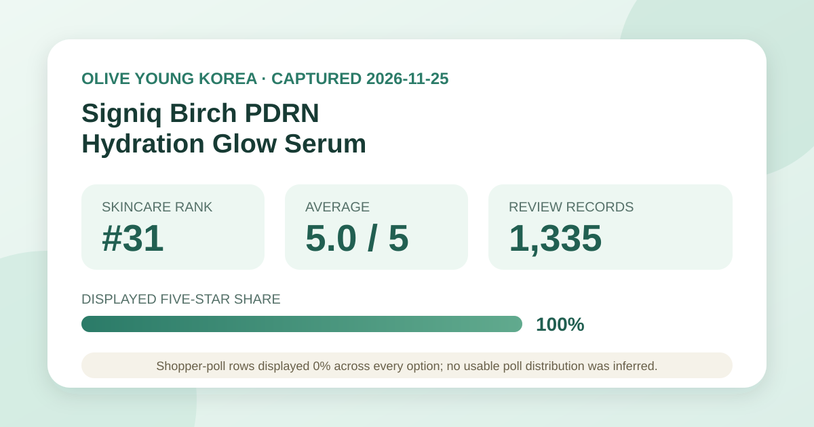
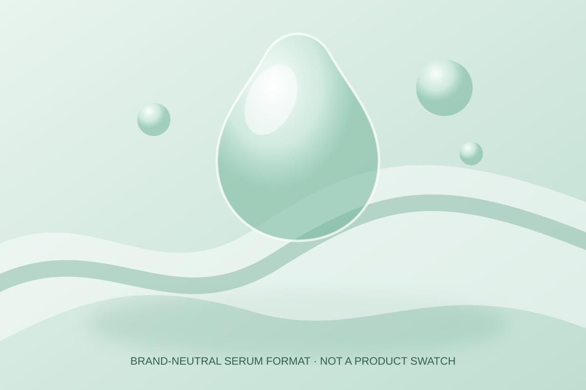

Data captured November 25, 2026. Olive Young Korea displayed “시그닉 자작나무 PDRN 수분광 세럼 30ml기획(세럼8ml+크림10ml).” This article uses “Signiq Birch PDRN Hydration Glow Serum” as a readable English label. It relies only on the live ranking, product identity, aggregate rating, displayed star shares, and the state of the shopper-poll panels. It does not copy or translate individual reviews, names, profiles, or photographs, and it makes no claim of firsthand use.

The short version: Signiq Birch PDRN Hydration Glow Serum appeared at number 31 in the captured skincare sales ranking. The ranking and detail titles agreed, while the product header and official review detail both showed 5.0 out of 5 from 1,335 records. The displayed star rows were 100% five-star and 0% for the other four levels. Every option in the three shopper-poll panels displayed 0%, so there is no defensible skin-type, concern, or irritation distribution to interpret. The rating is a storefront satisfaction signal, not proof of hydration, glow, barrier support, ingredient performance, or universal tolerance.
The official product header displayed 5.0 stars from 1,335 review records, and the detailed review area repeated both numbers. That internal agreement matters because it rules out a simple mismatch between a summary widget and the expanded statistics view at the time of capture. It supports one narrow observation: the linked storefront record was exceptionally favorable.
It does not reveal who was invited to review, how many purchases produced no review, whether every record came from a verified buyer, how ratings were moderated, or how much the current promotional configuration influenced the score. The review interface also stated that linked records may include the same contents in different volumes, packages, or gift configurations. Consequently, the count is best read as product-family feedback rather than a laboratory sample of one exact box.
A 5.0 average is not a measurement of water content, transepidermal water loss, pigmentation, barrier function, inflammation, wrinkle depth, or tissue repair. It cannot show that the serum outperforms another formula or that one person's skin will respond like the aggregate. It is a high retail satisfaction signal with important selection and context limits.
The expanded official view showed 100% five-star, 0% four-star, 0% three-star, 0% two-star, and 0% one-star. Unlike many rounded distributions on the site, these rows total exactly 100%. That is directionally consistent with the displayed 5.0 average.
The interface exposed percentages rather than raw counts, so this analysis does not convert the shares into estimated numbers of ratings. A perfect-looking distribution should invite more caution, not less: it cannot reveal review incentives, the mix of early and later feedback, differences between configurations, or whether rounding conceals a very small non-five-star share. Nor can it explain which parts of the purchase—formula, price, packaging, delivery, promotion, or gift—drove the rating.
The detailed review view contained three familiar panels: skin type, skin concern, and irritation. However, every option in every panel displayed 0%. Dry, combination, and oily were all 0%; moisture, soothing, and wrinkle or brightening were all 0%; gentle, ordinary, and felt irritation were all 0%.
Those rows do not form distributions and cannot be interpreted as survey results. They may reflect unavailable, incomplete, inapplicable, or not-yet-populated poll data, but the interface did not explain the cause. This article therefore does not select a leading skin type, claim that no one had a concern, or infer that nobody experienced irritation. The correct conclusion is simply that the captured poll panel was unusable.
This distinction is especially important because a 0% “felt irritation” row beside 0% “gentle” and 0% “ordinary” cannot establish tolerance. Without a denominator and a coherent set of shares, the panel provides no predictive evidence for sensitive, acne-prone, dry, oily, or combination skin.
The official review area exposed the rating, count, distribution, and unusable poll rows, but it did not provide a stable retailer-generated anonymous theme summary that could be reported without relying on individual review text. Accordingly, this analysis does not infer recurring topics from the visible review feed.
That boundary is deliberate. A handful of individual comments cannot stand in for all 1,335 linked records, and copying or translating those comments would introduce identifiable or copyrighted material without turning them into a valid aggregate. The analysis stops at the statistics the interface clearly displayed.

The listing identifies this as a serum. In general skincare language, a serum is a leave-on format often used before cream, but the category alone does not determine viscosity, spread, absorption speed, tack, residue, scent, finish, or compatibility with sunscreen and makeup. Those qualities depend on the finished formula and the way it is applied.
I did not open, dispense, spread, layer, or wear this product. The local illustration uses translucent droplets and flowing ribbons to communicate a generic serum format without reproducing the package, formula color, or a real swatch. It should not be read as evidence that the actual product is watery, silky, fast-absorbing, non-sticky, fragrance-free, or suitable under makeup.
The retailer title contains birch, PDRN, a hydration or moisture-barrier marketing phrase, and a glow phrase. Here those words identify the listing; they do not establish botanical source, PDRN source, concentration, molecular characteristics, delivery into skin, stability, or a quantified benefit. This analysis did not independently audit the current ingredient list or verify any active percentage.
Likewise, “hydration glow” is not an instrument endpoint. The capture included no corneometer reading, imaging protocol, baseline, comparator, follow-up interval, or blinded assessment. A perfect star display cannot fill those gaps. Readers seeking ingredient, allergen, fragrance, or regional-formula information should consult the current package and the brand's current disclosure rather than infer it from the product name.
Rank 31 describes one capture of Olive Young Korea's skincare sales list. It is not a claim that this is the thirty-first-best serum, and it says nothing clinical. Advertising, launch timing, influencer promotion, inventory, discounting, seasonality, and short-term demand can move a listing quickly.
The captured page showed a 30 ml serum plan titled with an 8 ml serum and 10 ml cream addition at ₩28,000. The gift area indicated that the additions were sold out during capture. Price, stock, seller, pack contents, and promotion status can change independently of the review aggregates. Verify the live listing and checkout terms before treating any of those details as current.
The captured product header and detailed review view both showed 5.0 out of 5 from 1,335 linked records. The displayed distribution was 100% five-star and 0% for every other row.
No. Every option in all three panels displayed 0%, so the rows do not form a valid distribution. This analysis treats the polls as unavailable rather than as evidence that no response occurred.
No. The retailer title identifies the listing but does not establish source, concentration, delivery, clinical efficacy, or suitability for a medical concern.
No. This article analyzes retailer-displayed aggregates only and uses brand-neutral vector artwork rather than a product photograph or tested swatch.
It was the listing position in one captured Olive Young Korea skincare sales ranking. It is temporary sales context, not a quality, safety, or clinical ranking.
Source: Olive Young Korea product listing and official aggregate review statistics, captured November 25, 2026. Open the source product page.
Published by The K-Beauty Data Desk. The source does not independently verify every buyer's identity, and this page is an editorial analysis of retailer-displayed aggregates—not medical advice or a substitute for the current product label.
← All reviews · Review-volume rankings · Skin-poll explorer · Methodology